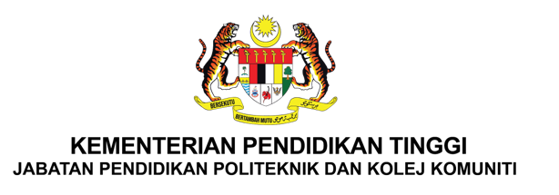

DOKUMEN BUKTI KPI 18: BILANGAN PROJEK RESEARCH, DEVELOPMENT, INNOVATION, COMMERCIALIZATION AND ECONOMY (RDICE) YANG DIAPLIKASIKAN KEPADA PEMEGANG TARUH
⚠️ Nota Penting: Sila muat naik dokumen bukti secara pakej (1+2) mengikut item sasaran institusi, dan pastikan senarai semak yang telah disemak (✓ / ✗) turut dilampirkan bersama.